Unofficial study solution; not an official GTU answer key. Answers have not been independently verified. English text reflows; source equations, diagrams and Gujarati retain their original appearance. Use Enlarge image to inspect them.
આ બિનસત્તાવાર અભ્યાસ ઉકેલ છે, સત્તાવાર GTU જવાબવહી નથી. PDF માંથી ગુજરાતી લખાણ સાચું નીકળતું નથી, તેથી દરેક જવાબ મૂળ ચિત્રરૂપે જાળવ્યો છે. વાંચવા માટે ચિત્ર મોટું કરો. મૂળ પ્રશ્ન અને પરીક્ષાના વિકલ્પોની સૂચનાઓ અનુસરો.
Coverage: all 28 printed parts, including every OR alternative, are answered in English and easy Gujarati. The paper is 70 marks; OR alternatives do not add marks.
Questions: the original paper states English is authentic. English question wording is reproduced with only whitespace normalised; Gujarati meanings are unofficial study aids.
Methods: diagrams are schematic. Loading, support, cross-section and elastic-model assumptions are stated with each solution. Positive bending is sagging; positive shear is the net upward external force to the left of a cut.
Status: unofficial study material, not an official GTU answer key or a design certification. The original question paper is kept unchanged as a separate PDF.
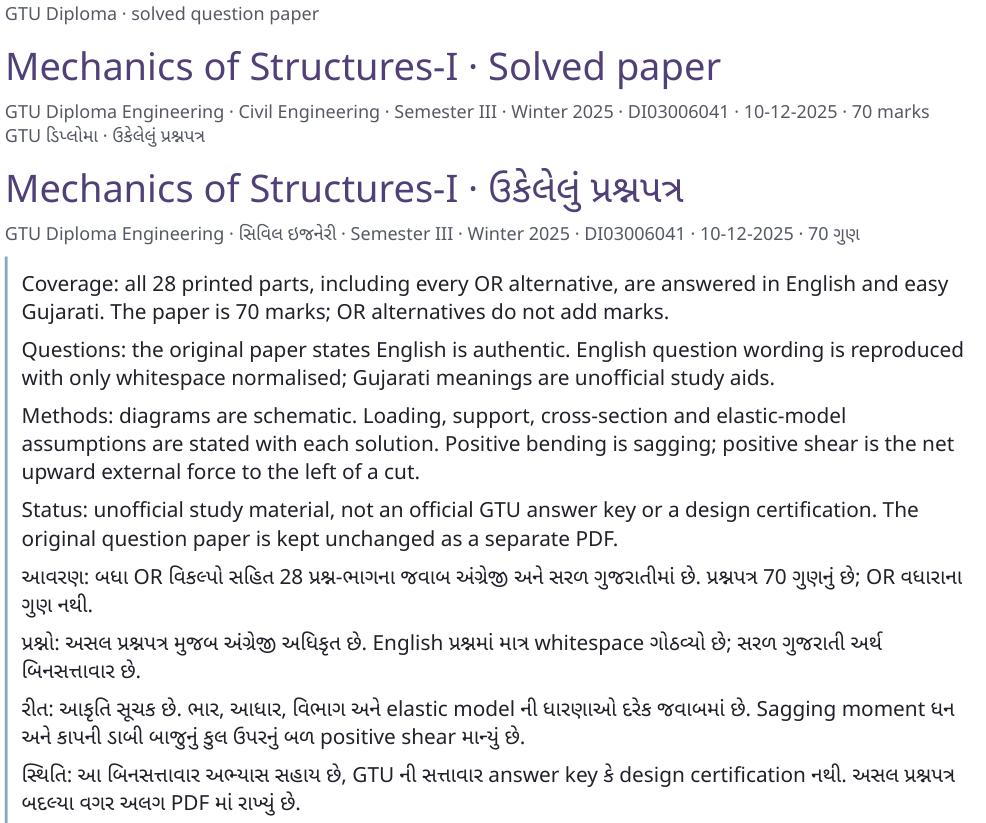
Question 1
Q1 · Direct stress and strain
Q.1 (a) · Define following: (1) Direct stress (2) Linear strain (3) Poisson’s ratio · 3 marks
• Direct stress σ: internal normal force per unit cross-sectional area, σ = P/A; tension or compression, in N/mm².
• Linear strain ε: change in length divided by original length, ε = ΔL/L; it is dimensionless.
• Poisson’s ratio ν: negative ratio of lateral strain to longitudinal strain under uniaxial loading, ν = −ε lateral / ε longitudinal.
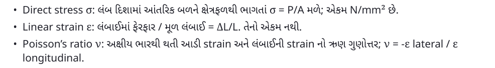
Q.1 (b) · Draw stress-strain curve for mild steel bar giving salient points on it. · 4 marks
In a tensile test the engineering stress is load / original area and strain is extension / original gauge length.
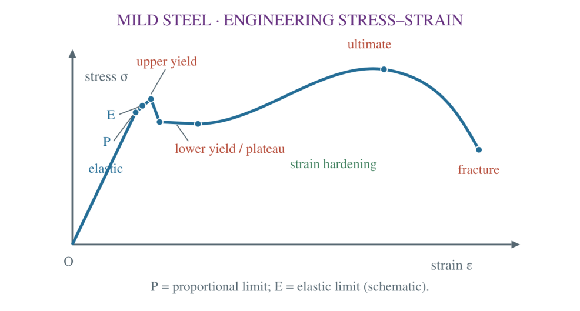
Engineering stress–strain curve, not to scale.
• O to proportional limit: nearly straight; σ is proportional to ε. After unloading within the elastic limit, the specimen recovers.
• Yield: upper yield is followed by lower yield and a plateau; large plastic strain occurs with little stress increase.
• Strain hardening: stress rises to ultimate tensile stress (maximum engineering stress). Necking follows; engineering stress drops to fracture.
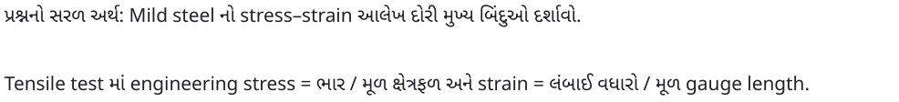
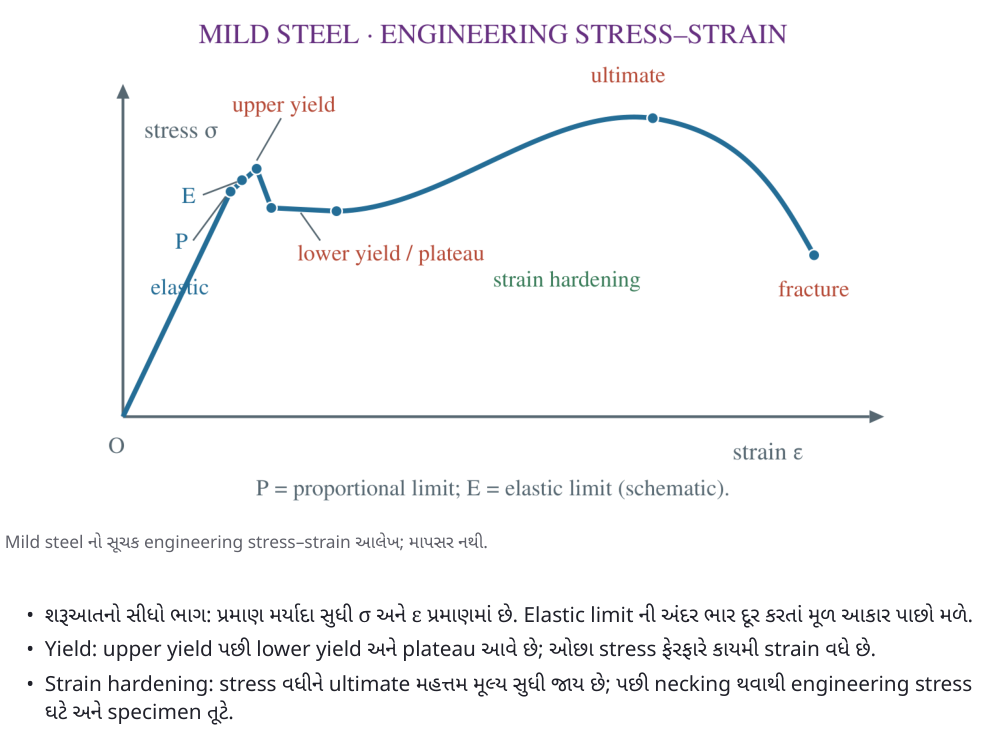
Q.1 (c) · A copper rod of 20mm diameter is placed inside the steel tube of external diameter 25mm and internal diameter 22mm. The tube and rod are 500mm long and are rigidly connected together at the ends. Find the value of the external load P carried by the assembly if the stress in steel Is limited to 150 N/mm2. Take Es=200 kN/mm2 and Ec=100 kN/mm2. · 7 marks
Take the copper rod and steel tube as concentric, rigidly joined at both ends, with equal axial strain and no initial stress. The load sense is not specified; values below are magnitudes.
As = π(25² − 22²)/4 = 110.741 mm²; Ac = π(20)²/4 = 314.159 mm².
Es = 200,000 N/mm²; Ec = 100,000 N/mm².
ε = σs/Es = 150/200,000 = 0.00075.
σc = Ecε = 75 N/mm².
Ps = 150(110.741) = 16,611.17 N; Pc = 75(314.159) = 23,561.94 N.
P = Ps + Pc = 40,173.12 N = 40.173 kN.
External load magnitude P = 40.17 kN when steel stress reaches 150 N/mm².
The common 500 mm length would change by 0.00075 × 500 = 0.375 mm in this elastic model. Copper strength and possible compression instability are not specified.
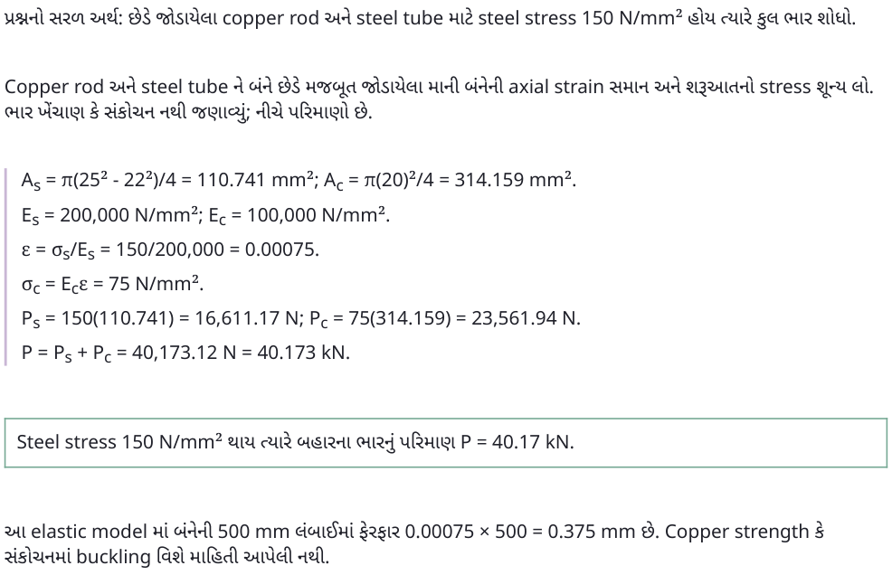
Q.1 (c) · A steel bar 1600mm long is acted upon by forces as shown in figure.1. Find the elongation of the bar. Take E=2.1x105 N/mm2. · OR · 7 marks
Figure 1 is balanced: −9 + 4 − 6 + 11 = 0 kN. Cut each portion and use the left-hand forces; positive N denotes tension.
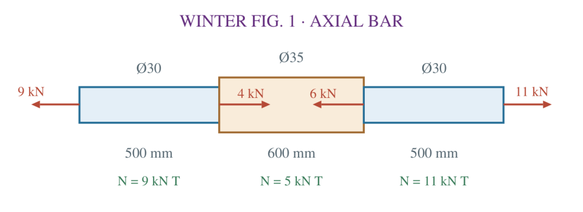
Source loading redrawn; T denotes tension.
N₁ = 9 kN; N₂ = 9 − 4 = 5 kN; N₃ = 9 − 4 + 6 = 11 kN, all tensile.
A₃₀ = π(30)²/4 = 706.858 mm²; A₃₅ = π(35)²/4 = 962.113 mm².
ΔL = Σ(NL/AE) = 9000(500)/(706.858 × 210,000) + 5000(600)/(962.113 × 210,000) + 11,000(500)/ (706.858 × 210,000).
ΔL = 0.030315 + 0.014848 + 0.037052 = 0.082215 mm.
Total elongation = 0.0822 mm.
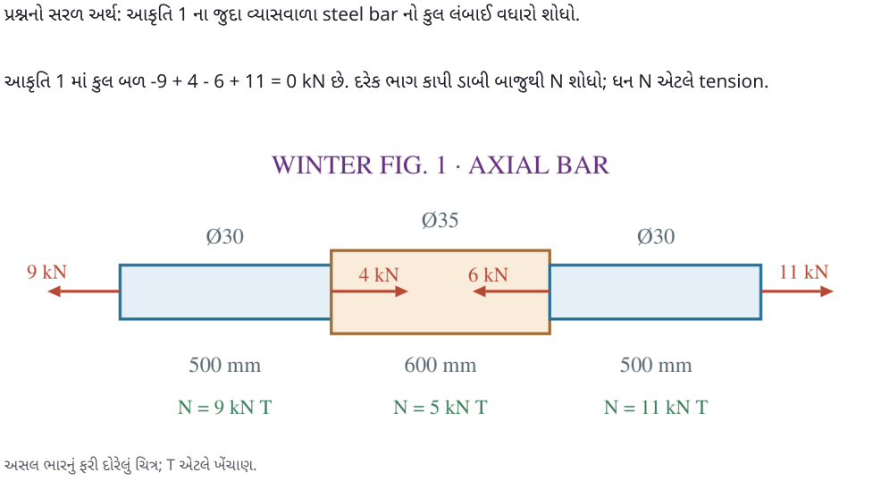
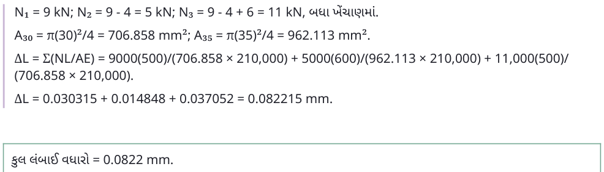
Question 2
Q2 · Second moment and beam diagrams
Q.2 (a) · (1)Write a statement of parallel axis theorem with equation. (2) What will be the value of ratio of Moment of inertia about centroidal x-axis (Ixx) and Maximum distance from neutral axis to extreme fibre (ymax) for the circular section? · 3 marks
For any plane area, the second moment about an axis equals the second moment about a parallel centroidal axis plus area times the square of their separation: I = IG + Ad².
For a solid circle of diameter d: Ixx = πd⁴/64, ymax = d/2.
Ixx / ymax = πd³/32 (length³).
This assumes a solid circle; a hollow section has a different modulus.
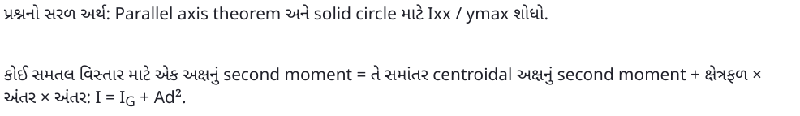
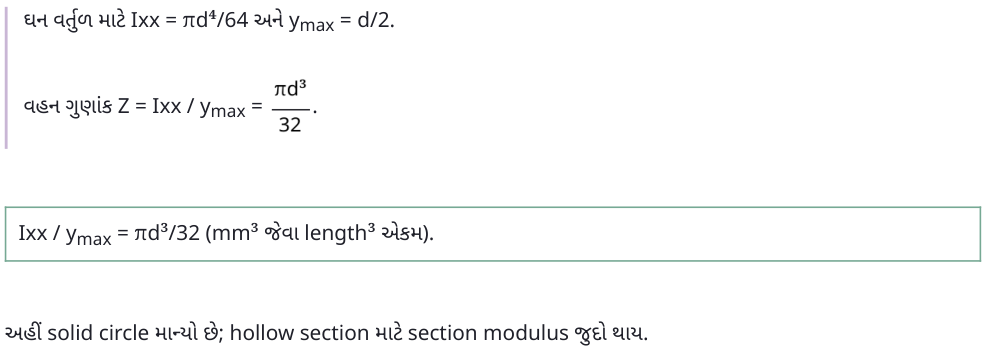
Q.2 (b) · Calculate Ixx for a T-section with flange and web each of size 60mm x 20mm. · 4 marks
Interpret the two given 60 × 20 mm rectangles as a 60 × 20 flange and a non-overlapping 20 × 60 web beneath it, giving 80 mm overall depth. x–x is centroidal.
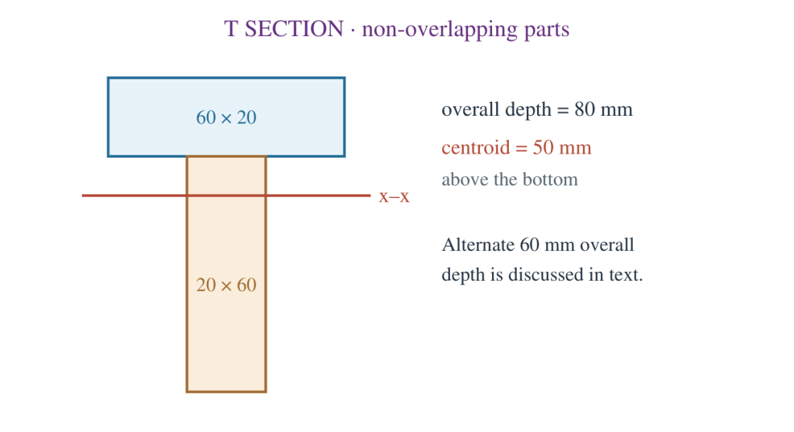
The stated independent-part interpretation; the alternate overall-depth interpretation is below.
Aweb = Aflange = 1200 mm².
Centroids from bottom: yweb = 30 mm, yflange = 70 mm.
ȳ = (1200 × 30 + 1200 × 70)/2400 = 50 mm.
Ixx = 20(60)³/12 + 1200(50 − 30)² + 60(20)³/12 + 1200(70 − 50)².
Ixx = 360,000 + 480,000 + 40,000 + 480,000 = 1,360,000 mm⁴.
Ixx = 1.36 × 10⁶ mm⁴ for 80 mm overall depth.
If 60 mm instead means overall depth with a 20 mm flange, the non-overlapping stem is 20 × 40 mm. Then A = 2000 mm², ȳ = 38 mm from bottom and Ixx = 578,667 mm⁴. The question gives no figure, so state the convention.
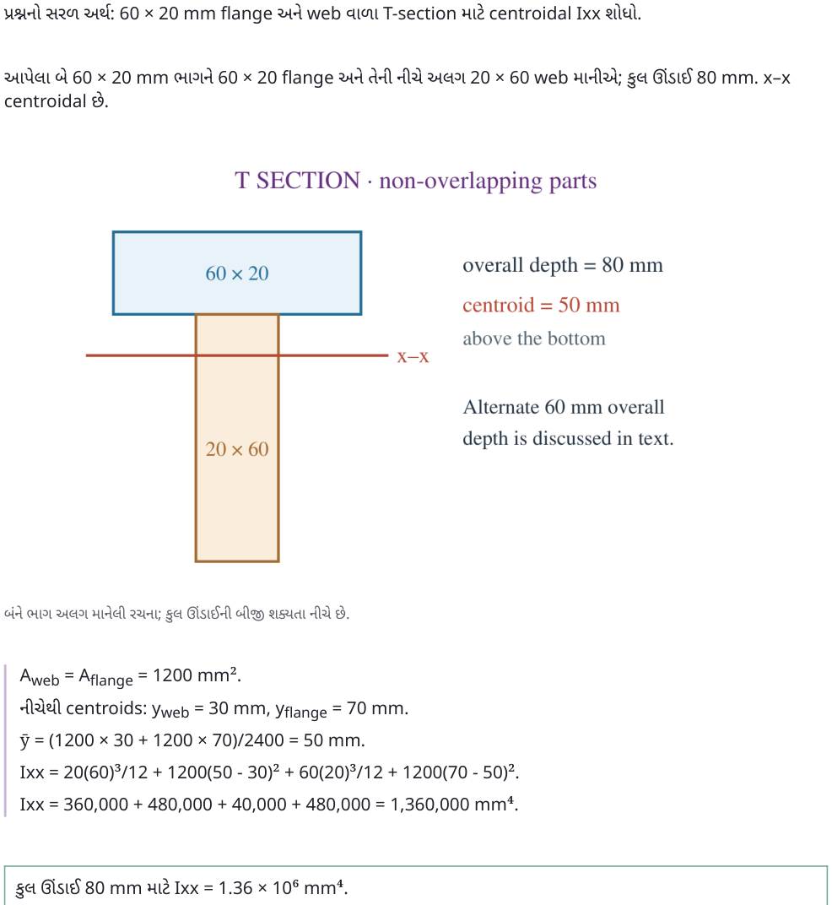
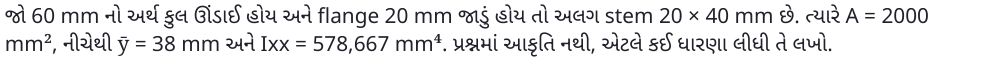
Q.2 (c) · Draw S.F.D. and B.M.D. for the beam as shown in figure.2 · 7 marks
Figure 2: A–B = 6 m, full-span 50 kN/m UDL and 60 kN at centre C. Assume simple supports; x is measured from A.
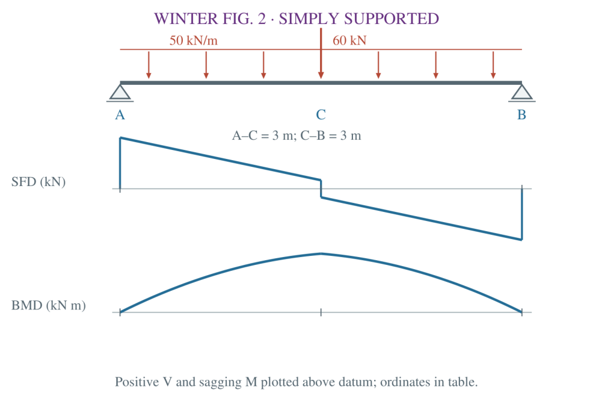
Redrawn loading, SFD and BMD: positive shear and sagging moment above the datum. The table gives exact key ordinates.
Total UDL = 50(6) = 300 kN. Symmetry gives RA = RB = (300 + 60)/2 = 180 kN.
0 ≤ x < 3: V = 180 − 50x; M = 180x − 25x².
3 < x ≤ 6: V = 180 − 50x − 60; M = 180x − 25x² − 60(x − 3).
At C the shear changes from +30 to −30 kN and MC = 180(3) − 25(3²) = +315 kN m.
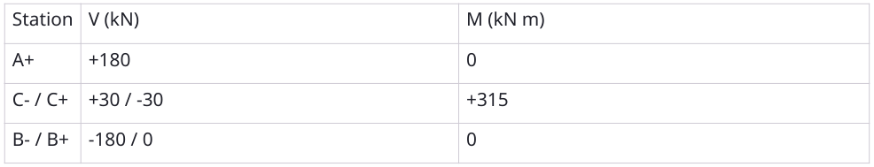
RA = RB = 180 kN; maximum M = +315 kN m at C.
SFD is linear between loads; BMD is continuous and parabolic with its maximum at the point-load jump.
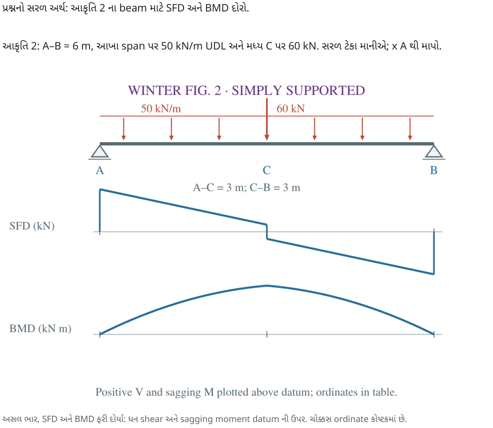
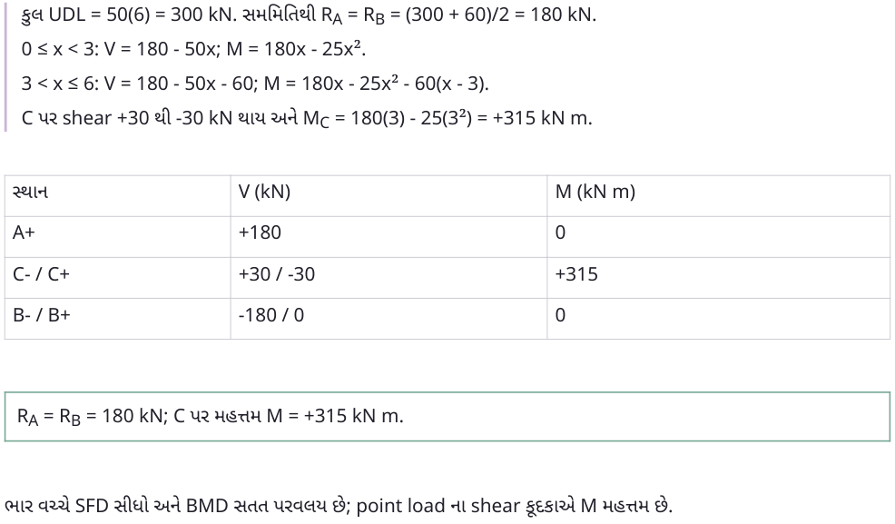
Q.2 (a) · (1)Write a statement of perpendicular axis theorem with equation. (2)What will be the value of ratio of Ibase and Ixx of rectangular section having width (b) and depth (d)? · OR · 3 marks
For a plane lamina, polar area moment about z, perpendicular to the plane at the axes’ intersection, equals the sum about two mutually perpendicular in-plane axes through the same point: Iz = Ix + Iy.
Rectangle: Ibase = bd³/3; centroidal Ixx = bd³/12.
Ibase / Ixx = (bd³/3)/(bd³/12) = 4.
Ibase : Ixx = 4 : 1.
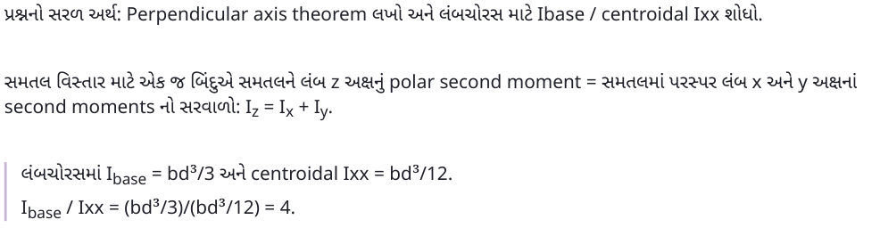
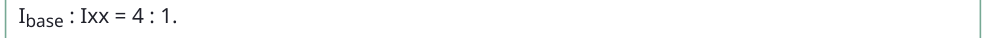
Q.2 (b) · Calculate Ixx for the angle section 125x75x10mm keeping longer leg vertical. · OR · 4 marks
Treat the angle as sharp-cornered rectangles without fillets. The 125 mm leg is vertical; x–x is horizontal through the centroid.
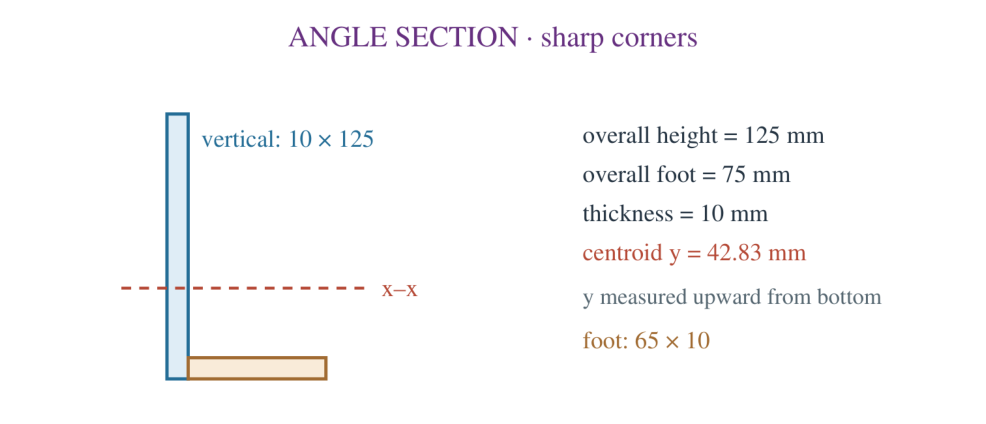
Vertical leg plus horizontal foot without double-counting their overlap.
Vertical A₁ = 10 × 125 = 1250 mm²; foot A₂ = (75 − 10) × 10 = 650 mm².
y₁ = 62.5 mm; y₂ = 5 mm above bottom.
ȳ = (A₁y₁ + A₂y₂)/(A₁ + A₂) = 42.829 mm.
Ixx = 10(125)³/12 + 1250(62.5 − 42.829)² + 65(10)³/12 + 650(42.829 − 5)².
Ixx = 1,627,604 + 483,688 + 5,417 + 930,169 ≈ 3,046,878 mm⁴ (rounded components).
Centroidal Ixx ≈ 3,046,878 mm⁴.
Manufactured ISA sections have root/toe radii and tolerances; a steel-table value may differ.
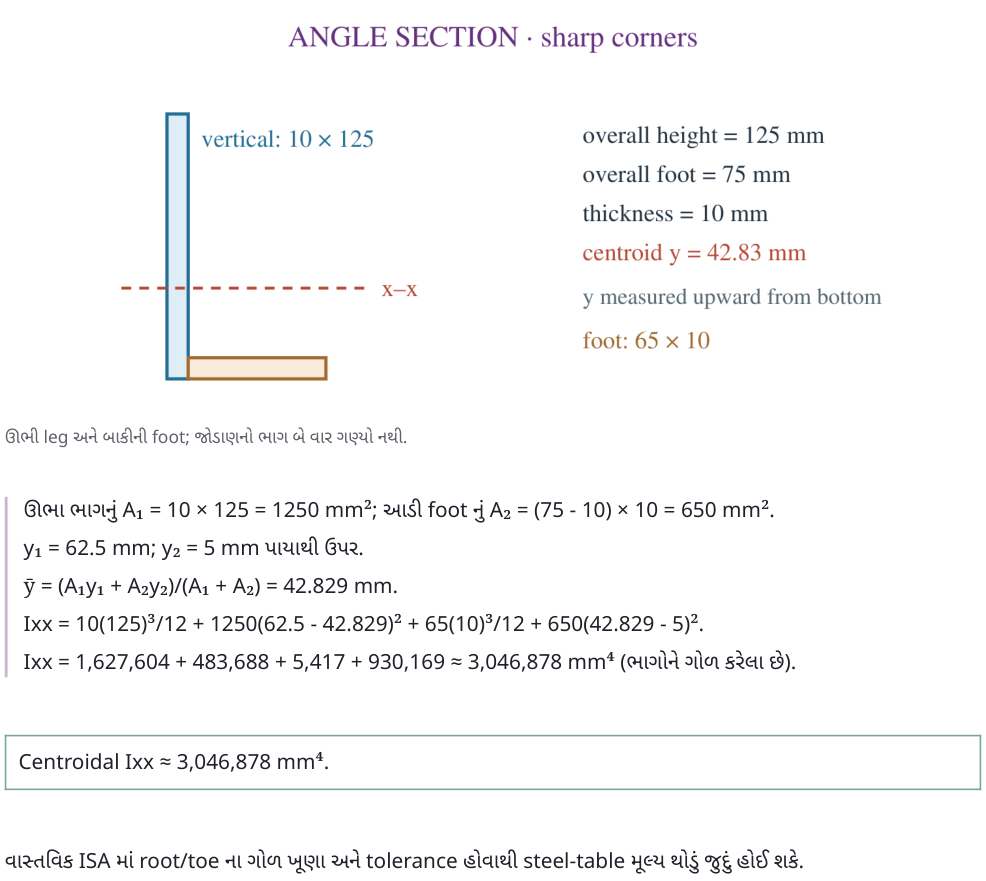
Q.2 (c) · Draw S.F.D. and B.M.D. for the beam as shown in figure.4 · OR · 7 marks
Figure 4: fixed A, free B, span 3 m, 5 kN/m throughout and 10 kN at B. Let x be measured from A.
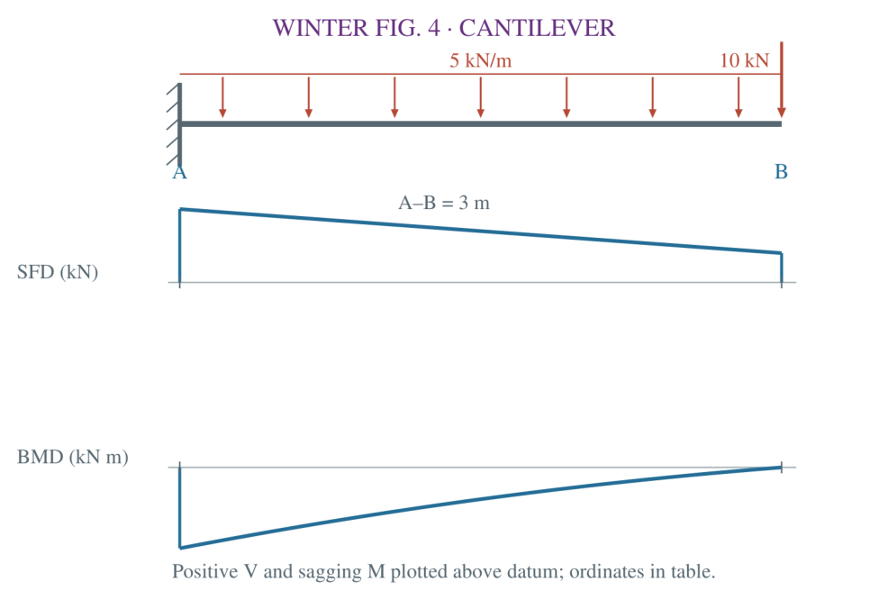
Redrawn loading, SFD and BMD: positive shear and sagging moment above the datum. The table gives exact key ordinates.
RA = 5(3) + 10 = 25 kN upward.
Support reaction moment = 15(1.5) + 10(3) = 52.5 kN m counterclockwise; internal MA = −52.5 kN m.
0 ≤ x < 3: V = 25 − 5x.
M = −10(3 − x) − 2.5(3 − x)².
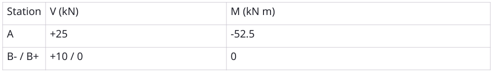
VA = +25 kN; MA = −52.5 kN m; MB = 0.
The load at B makes V jump from +10 to zero; the BMD is a negative parabola.
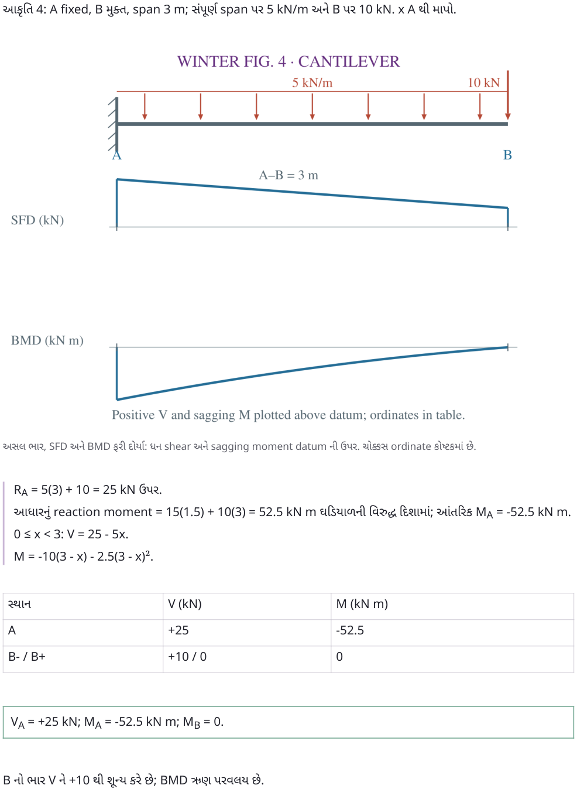
Question 3
Q3 · Beam forces and stresses
Q.3 (a) · Give three examples each of statically determinate beams and statically indeterminate beams. · 3 marks
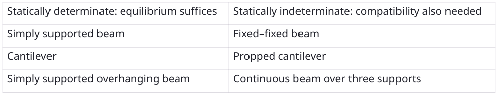
Assume ideal supports and planar loading. Extra reactions require deformation compatibility and material/section stiffness.
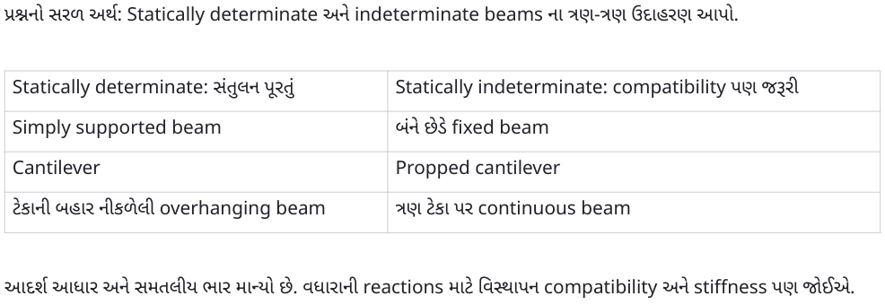
Q.3 (b) · Explain importance of point of contra flexure. · 4 marks
A point of contra-flexure is an interior point where bending moment is zero and changes sign, so curvature changes from sagging to hogging or the reverse. A zero moment without a sign change is not necessarily one.
• Find it by setting M(x) = 0 in the correct beam interval and checking the signs on either side.
• It identifies the change in tension face and helps choose reinforcement locations and anchorage; do not cut reinforcement at that point without development-length and code checks.
• For the Summer Fig. 1 in this set, it occurs 2.5 m from A, not at a support.
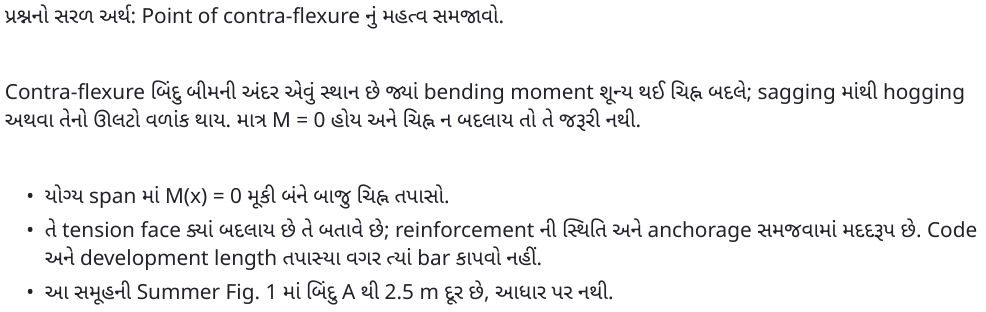
Q.3 (c) · A cantilever beam 1.2 m long has rectangular section 150mm x 300mm. If permissible bending stress is 15 N/mm2, find point load at free end of cantilever. · 7 marks
Assume 150 mm width and 300 mm vertical depth, with only a point load at the free end; neglect self-weight.
L = 1200 mm; Z = bd²/6 = 150(300)²/6 = 2,250,000 mm³.
Mallow = 15(2,250,000) = 33,750,000 N mm = 33.75 kN m.
For the free-end load, |Mfixed| = PL; P = 33.75/1.2 = 28.125 kN.
Free-end point load P = 28.125 kN (bending limit).
Shear stress, deflection and self-weight must be checked separately for design.
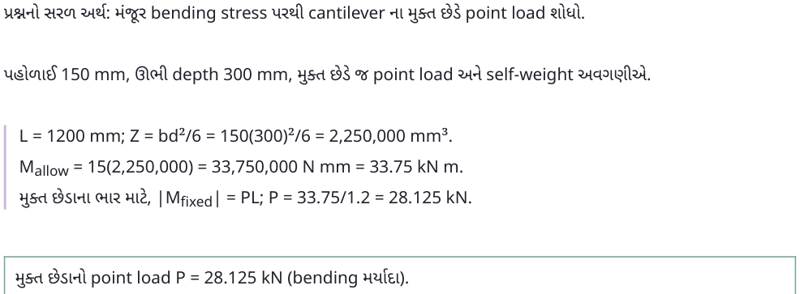
Q.3 (a) · Define shear force and bending moment. · OR · 3 marks
Shear force V at a section: the algebraic resultant of transverse forces on either side of an imagined cut; units kN. Bending moment M: the algebraic moment of forces about that section on either side; units kN m.
The internal actions on opposite cut faces are equal and opposite. A consistent sign convention is essential.
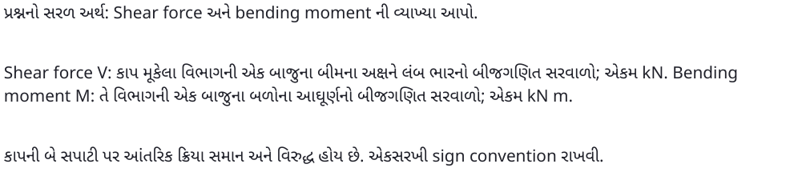
Q.3 (b) · Explain relation between Shear Force and Bending moment. · OR · 4 marks
Take downward distributed load intensity w positive, V as the upward external resultant on the left of the cut, and sagging M positive.
dV/dx = −w(x); dM/dx = V(x).
M(b) − M(a) = area under the SFD between a and b.
A downward point load P makes a −P jump in V; M is continuous there if no couple acts.
Where V changes sign from positive to negative, M has a local maximum. A maximum can also occur at a point-load jump. A concentrated applied couple makes M jump.
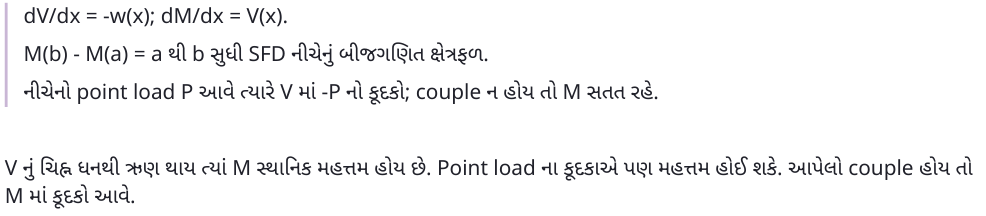
Q.3 (c) · A beam of triangular section having base width 150mm and height 200mm is subjected to a shear force of 20kN. Find the value of maximum shear stress and draw shear stress distribution diagram. · OR · 7 marks
Assume a solid isosceles triangle of base b = 150 mm at the bottom, height h = 200 mm, and vertical transverse shear V = 20,000 N. Let y be measured upward from the base.
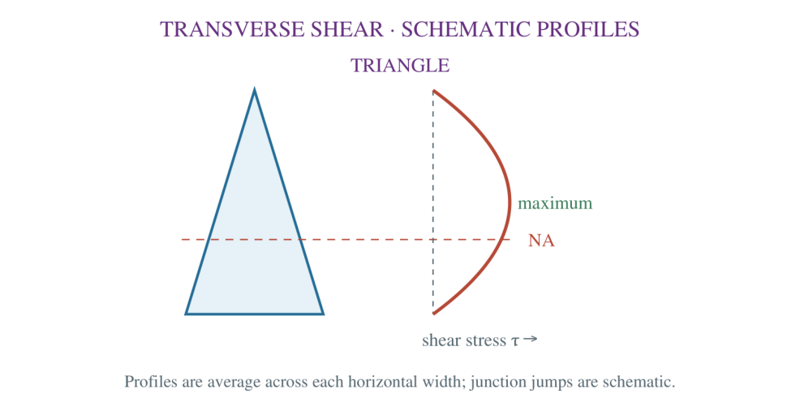
Parabolic shear-stress profile; NA at h/3 from base and maximum at h/2.
A = bh/2 = 15,000 mm²; Ixx = bh³/36 = 33,333,333 mm⁴; neutral axis at y = h/3 = 66.67 mm.
At a horizontal slice y, local width t = b(1 − y/h).
First area moment below the slice about the neutral axis: Q = b y(h − y)²/(3h).
τ(y) = VQ/(Ixx t) = 12Vy(h − y)/(bh³), with limiting zero at the apex.
The parabola is maximum at y = h/2 = 100 mm; τmax = 3V/(bh) = 3(20,000)/(150 × 200) = 2.000 N/ mm².
At the neutral axis, τNA = 8V/(3bh) = 1.778 N/mm², which is less than the maximum.
Maximum shear = 2.00 N/mm², at mid-height; not at the centroidal axis.
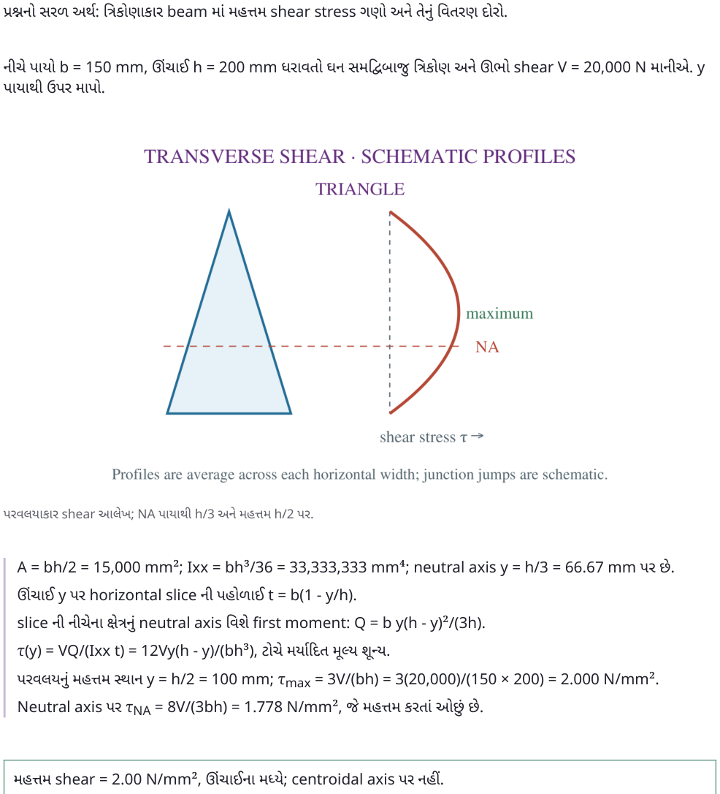
Question 4
Q4 · Bending and trusses
Q.4 (a) · (1) Give assumptions made in the theory of pure bending (any three). (2) Explain how bending stress varies across the depth of a rectangular beam. · 3 marks
Assume initially straight prismatic beam, homogeneous isotropic linear elastic material, plane sections remain plane, and small curvature. In pure bending the moment is constant and transverse shear is zero.
For a rectangle the centroidal neutral axis is at mid-depth. By σ = My/I, stress varies linearly from zero there to equal magnitude at top and bottom; for sagging, top is compression and bottom tension.
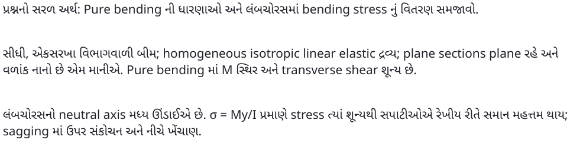
Q.4 (b) · Explain types of trusses as per stability. · 4 marks
For a plane pin-jointed truss with three independent external reaction components, let m = members and j = joints.
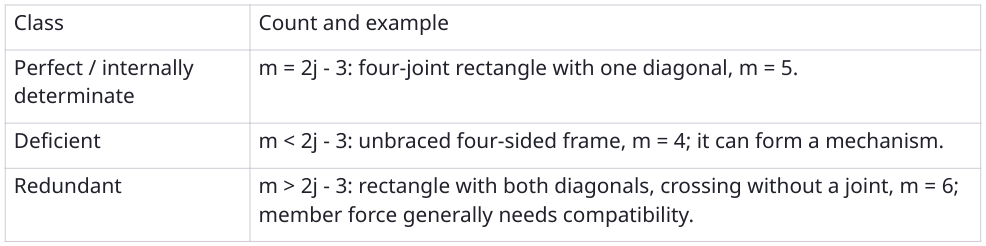
The count alone does not prove stability: geometry, joint connectivity and independent support restraints must also be checked.
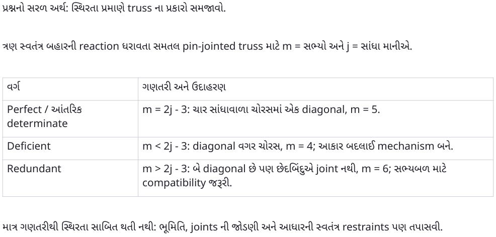
Q.4 (c) · Find forces in all members of a truss as shown in figure no.5 by method of joint. · 7 marks
The original draws AD dashed: treat it as the altitude, not a member. Assume B is a pin, C a roller, and joint loads only. BC = 3.6 m, angles at B and C are 60° and 30°.
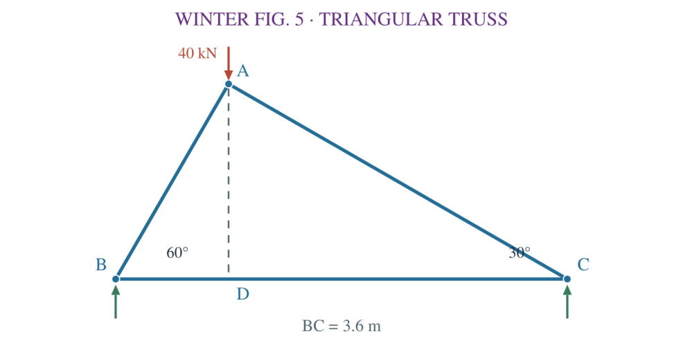
Source geometry and loads redrawn schematically; see equations for reactions and joint equilibrium.
Geometry: h = BD tan60° = (3.6 − BD) tan30°; hence BD = 0.9 m and DC = 2.7 m.
ΣMB = 0: RC(3.6) = 40(0.9); RC = 10 kN ↑ and RB = 30 kN ↑.
Joint B: 30 + FAB sin60° = 0, so FAB = −34.64 kN; FBC = −FAB cos60° = +17.32 kN.
Joint C: 10 + FAC sin30° = 0, so FAC = −20.00 kN; horizontal equilibrium gives FBC = 17.32 kN.
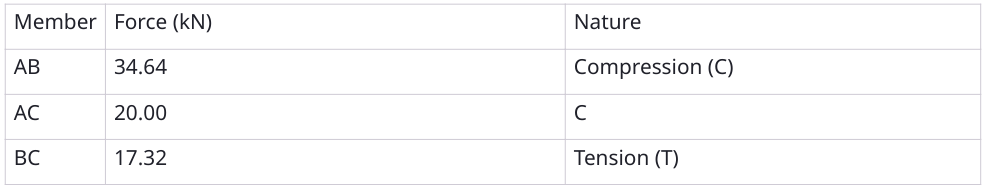
AB = 34.64 kN C; AC = 20.00 kN C; BC = 17.32 kN T.
If AD is instead intended as a pin-connected member with a joint D on the bottom chord and no load at D, the collinear-member rule gives AD = 0, BD = DC = 17.32 kN T; the other forces are unchanged.
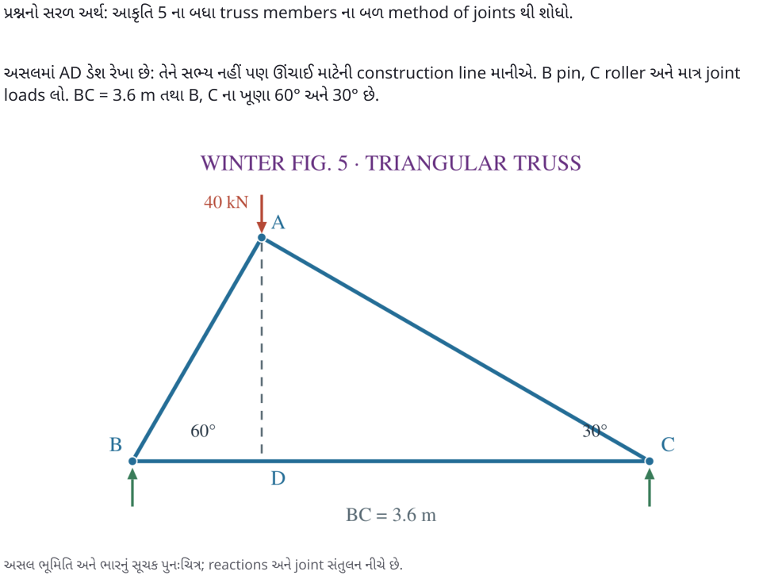
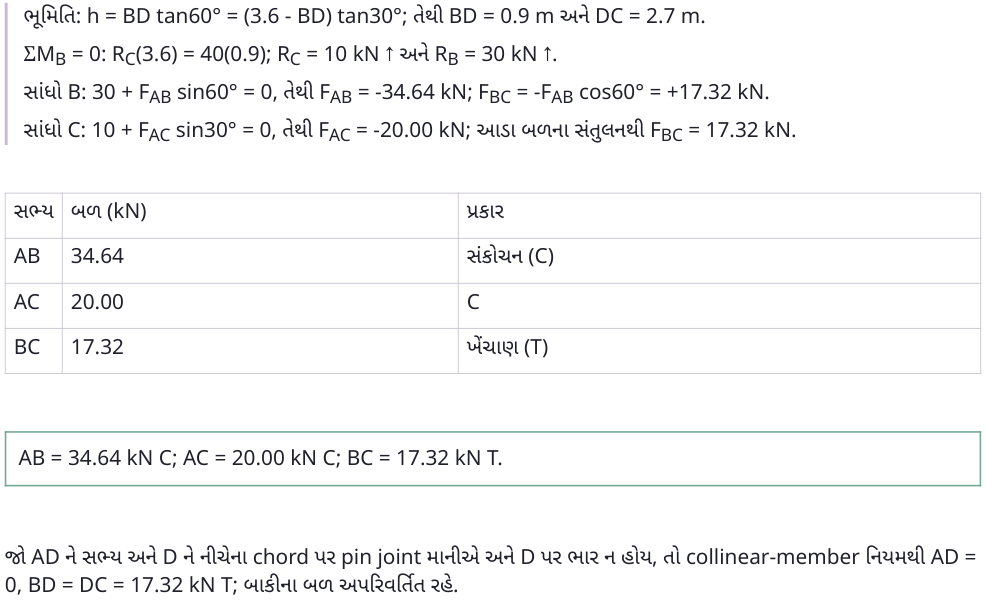
Q.4 (a) · (1)Draw shear stress distribution diagram for T-section & hollow rectangular section. (2) Explain how shear stress is distributed across the depth of a rectangular beam section. · OR · 3 marks
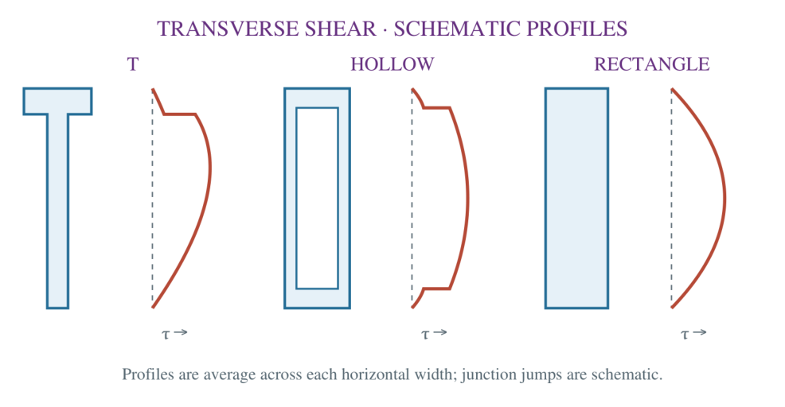
Qualitative horizontal-slice shear profiles; T neutral axis shown in the web.
• T: zero at extreme faces; τ increases in the flange and jumps where the width narrows to the web. The plotted peak is in a web containing the neutral axis.
• Hollow rectangle: zero at top/bottom, jumps at width changes, symmetrical maximum at the neutral axis.
• Solid rectangle: parabolic τ = 3V/(2A)·[1 − 4y²/h²], with y measured from the centroid; zero at faces and maximum 3V/(2A) at the neutral axis.
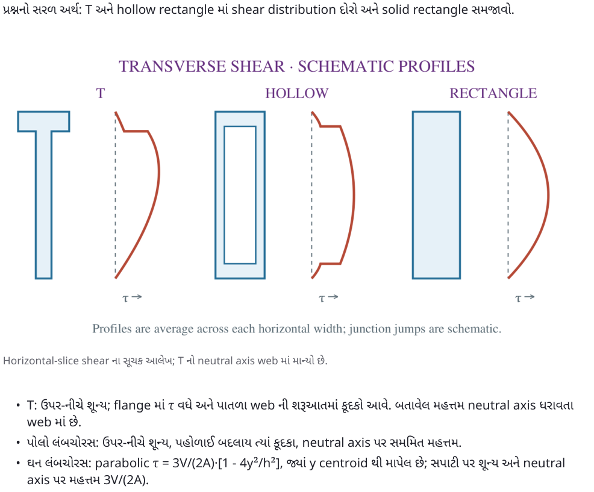
Q.4 (b) · Differentiate between truss and beam. · OR · 4 marks

Actual connections, member self-weight and non-joint loads can also produce bending in a real truss.
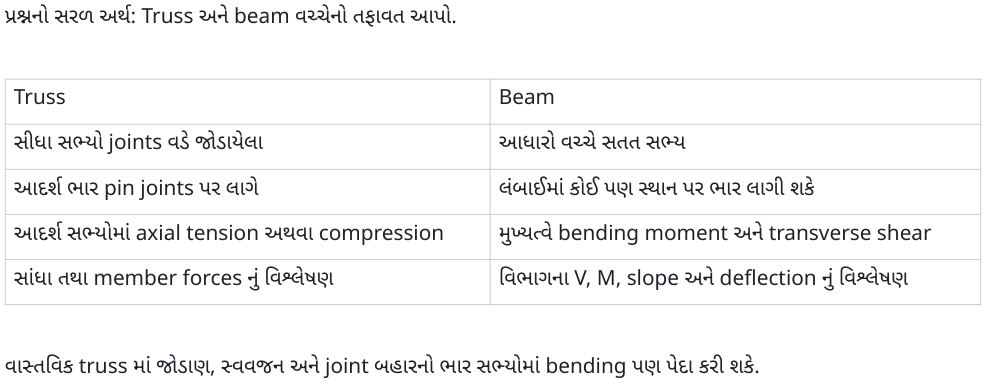
Q.4 (c) · Find forces in all members of a truss as shown in figure no.6 by method of joint. · OR · 7 marks
Figure 6: 1000 kN acts downward at B. Treat A and D as pin attachments to the wall, members as pin-jointed two-force bars, and self-weight as negligible. CD is the only bar at D, so its vertical reaction is zero.
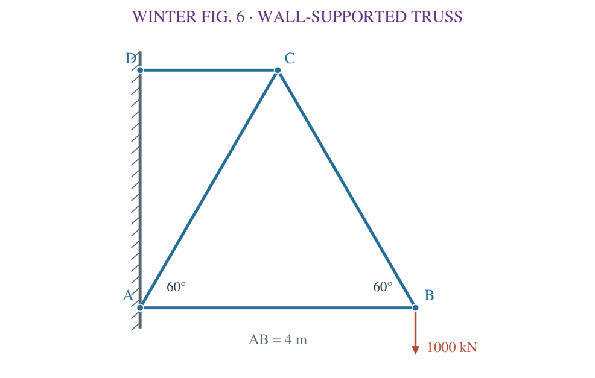
Source geometry and loads redrawn schematically; see equations for reactions and joint equilibrium.
AB = 4 m and base angles 60°; C is 2 m from A horizontally and 2√3 = 3.464 m above AB.
Joint B: FBC sin60° − 1000 = 0 → FBC = +1154.70 kN; −FAB − FBC cos60° = 0 → FAB = −577.35 kN.
Joint C: vertical equilibrium gives FAC = −1154.70 kN; horizontal equilibrium gives FCD = +1154.70 kN.
Joint D gives RDx = 1154.70 kN left and RDy = 0. Joint A gives RAx = 1154.70 kN right, RAy = 1000 kN up.
Check: 1154.70(3.464) ≈ 1000(4) = 4000 kN m about A.
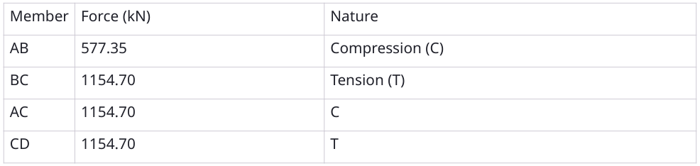
AB and AC are in compression; BC and CD are in tension.
The source shows a wall but does not define the attachment details. Different connection or frame assumptions can change the model; the applied force is 1000 kN, as printed.
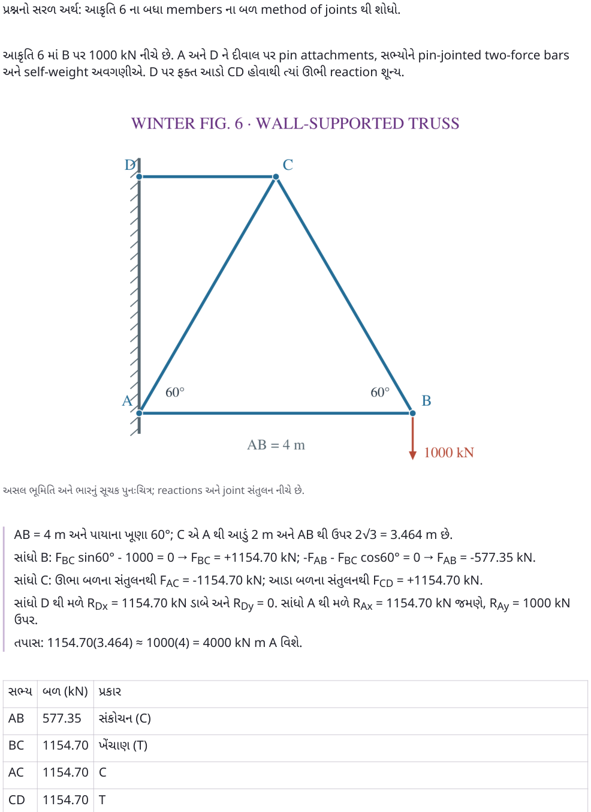
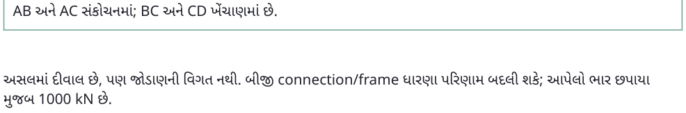
Question 5
Q5 · Slope, deflection and columns
Q.5 (a) · Define slope and deflection with figure. · 3 marks
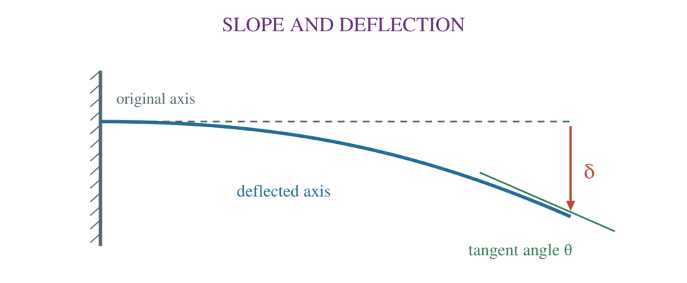
θ is rotation of the tangent; δ is displacement from the initial axis.
Slope θ: rotation of the tangent to the deflected elastic curve relative to the original beam axis; for small rotations θ ≈ dy/dx, measured in radians.
Deflection δ: transverse displacement of a point from its original position, measured in mm or m.
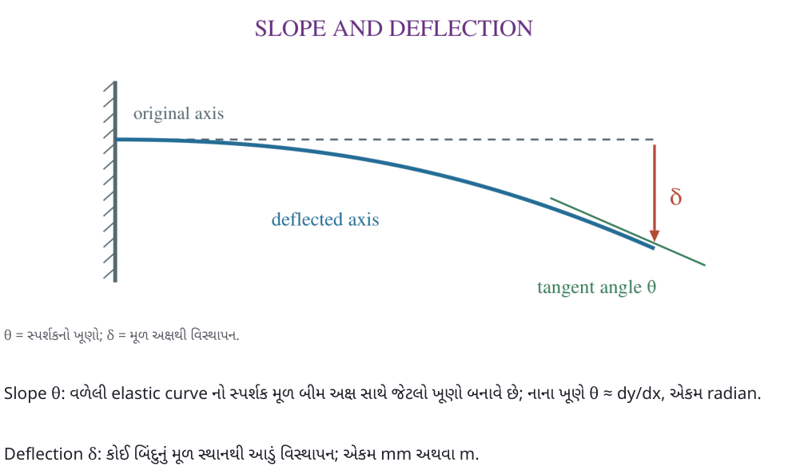
Q.5 (b) · A u.d.l. of 20 kN/m is acting on a cantilever beam of length 3m. Calculate the slope and deflection of the beam at the free end. E=2x105 N/mm2 and I=200cm4. · 4 marks
Assume full-span UDL and constant EI. Convert all quantities to N and mm before applying the small-deflection formulas.
w = 20 kN/m = 20 N/mm; L = 3000 mm; E = 2 × 10⁵ N/mm².
I = 200 cm⁴ = 200 × 10⁴ = 2,000,000 mm⁴.
θfree = wL³/(6EI) = 20(3000)³/[6(2 × 10⁵)(2 × 10⁶)] = 0.225 rad.
δfree = wL⁴/(8EI) = 20(3000)⁴/[8(2 × 10⁵)(2 × 10⁶)] = 506.25 mm downward.
Formal linear-theory values: θ = 0.225 rad; δ = 506.25 mm downward.
δ/L ≈ 0.169 and θ ≈ 12.9°, so small-deflection assumptions are questionable. These are textbook formula outputs, not a reliable serviceability or nonlinear design prediction; the stated I should be checked.
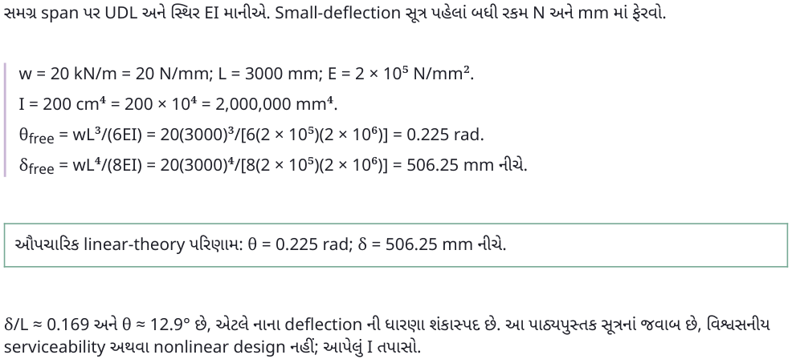
Q.5 (c) · A hollow circular section having internal diameter 60mm and thickness 10mm. Find radius of gyration. · 7 marks
For the concentric hollow circular section, inner diameter d = 60 mm and wall thickness t = 10 mm, so outer diameter D = d + 2t = 80 mm.
A = π(D² − d²)/4 = π(80² − 60²)/4 = 2199.115 mm².
Ixx = Iyy = π(D⁴ − d⁴)/64 = 1,374,446.79 mm⁴.
k = √(I/A) = √[(D² + d²)/16] = √[(80² + 60²)/16] = 25.0 mm.
Radius of gyration about either centroidal diameter = 25.0 mm.
About the polar axis perpendicular to the section, kpolar = √2 × 25 = 35.36 mm; the usual column k is the centroidal diametral value.
Q.5 (a) · What are the factors that influence the slope and deflection of a beam? · OR · 3 marks
• Load: magnitude, type, position and duration.
• Span and supports: length and end restraint govern curvature and boundary conditions.
• Flexural rigidity EI: material stiffness E and section shape/orientation I.
• Other effects: shear deformation, cracking, creep and temperature may matter in real structures.
Q.5 (b) · Cross section of wooden beam is 100mmx240mm. It is simply supported with 4m span. Find out u.d.l. that can be placed on its full span so that deflection at centre is 6mm. E=0.11x105 N/mm2 · OR · 4 marks
Assume width 100 mm, vertical depth 240 mm, constant E and I, full-span UDL, small elastic deflection and no separate self-weight.
I = bh³/12 = 100(240)³/12 = 115,200,000 mm⁴.
L = 4000 mm; E = 0.11 × 10⁵ = 11,000 N/mm²; δ = 6 mm.
δmid = 5wL⁴/(384EI); w = 384EIδ/(5L⁴).
w = 384(11,000)(115,200,000)(6)/[5(4000)⁴] = 2.28096 N/mm.
Since 1 N/mm = 1 kN/m, w = 2.28096 kN/m; total load wL = 9.12384 kN.
Full-span UDL w = 2.281 kN/m, for a 6 mm midspan deflection.
The value is a deflection limit only. Check bending, shear and whether self-weight is part of the allowed total UDL.
Q.5 (c) · A steel column is 4m length and fixed at both ends. Find safe load carried by the column using Euler’s formula. Ixx=1.98x108 mm4, Iyy=2.51x107 mm4, E=2x105 N/mm2, F.O.S. =4 · OR · 7 marks
Assume ideal fixed–fixed ends and elastic Euler buckling about the weaker axis.
L = 4 m = 4000 mm; Le = L/2 = 2000 mm.
Imin = Iyy = 2.51 × 10⁷ mm⁴ (less than Ixx = 1.98 × 10⁸ mm⁴).
Pcr = π²EImin/Le² = π²(2 × 10⁵)(2.51 × 10⁷)/(2000)².
Pcr = 12,386,353.52 N = 12,386.35 kN.
Psafe = Pcr/4 = 3,096.59 kN.
Formal Euler/FOS load = 3,096.59 kN.
Cross-sectional area and yield strength are not supplied, so slenderness and whether elastic buckling precedes yield cannot be verified. This numerical result is not a certified safe design.